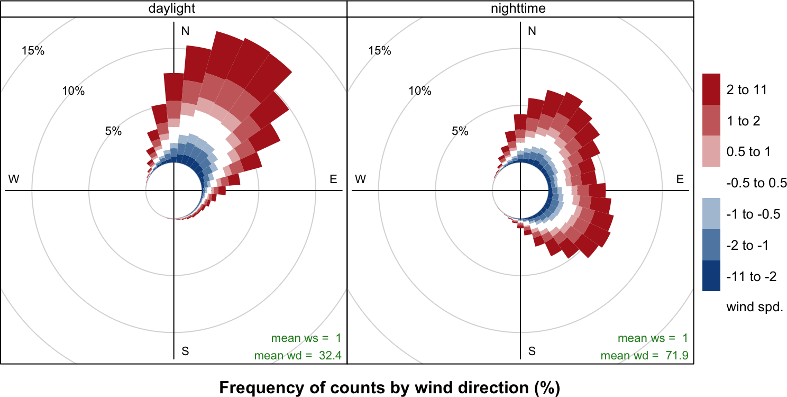

Section 4 Wind and Pollution Roses
The wind rose is a very useful way of summarising meteorological
data. It is particularly useful for showing how wind speed and wind
direction conditions vary by year. The windRose function can
plot wind roses in a variety of ways: summarising all available wind
speed and wind direction data, plotting individual wind roses by year,
and also by month. The latter is useful for considering how
meteorological conditions vary by season.
Data are summarised by direction, typically by 45 or 30\(^\circ\) and by different wind speed categories. Typically, wind speeds are represented by different width ‘paddles’. The plots show the proportion (here represented as a percentage) of time that the wind is from a certain angle and wind speed range.
The windRose function also calculates the percentage of
‘calms’ i.e. when the wind speed is zero. UK Met Office data assigns
these periods to 0 degrees wind direction with valid northerly winds
being assigned to 360 degrees.
The windRose function will also correct for bias when wind
directions are rounded to the nearest 10 degrees but are displayed at
angles that 10 degrees is not exactly divisible into e.g. 22.5
degrees. When such data are binned, some angles i.e. N, E, S, W will
comprise three intervals whereas others will comprise two, which can
lead to significant bias. This issue and its solution is discussed by
Droppo and Napier (2008) and Applequist (2012).1
openair uses a simple method to correct for the bias by globally
rescaling the count in each wind direction bin by the number of
directions it represents relative to the average. Thus, the primary
four directions are each reduced by a factor of 0.75 and the remaining
12 directions are multiplied by 1.125.
4.1 Example of use
First we load the packages:
library(openair)The function is very simply called as shown for Figure 4.1.
windRose(mydata)
Figure 4.1: Use of windRose function to plot wind speed/direction frequencies. Wind speeds are split into the intervals shown by the scale in each panel. The grey circles show the % frequencies.
highlights some interesting differences between the years. In 2000, for example, there were numerous occasions when the wind was from the SSW and 2003 clearly had more occasions when the wind was easterly. It can also be useful to use `type = “month”} to get an idea of how wind speed and direction vary seasonally.
\begin{figure}
windRose(mydata, type = "year", layout = c(4, 2))
function to plot wind speed/direction frequencies by year. Wind speeds are split into the intervals shown by the scale in each panel. The grey circles show the 10 and 20 % frequencies.} {#fig:windroseyear} \end{figure}
The type} option is very flexible in **openair** and can be used to quickly consider the dependencies between variables. \autoref{sec:cutData} describes the basis of this option in **openair** plot. As an example, consider the question: what are the meteorological conditions that control high and low concentrations of \pmten? By settingtype = “pm10”}, openair will split the
concentrations into four quantiles i.e. roughly equal numbers
of points in each level. The plot will then show four different wind
roses for each quantile level, although the default number of levels
can be set by the user — see ?cutData} for more details. \autoref{fig:windRsPM10} shows the results of settingtype = “pm10”}. For the lowest concentrations of the wind
direction is dominated by northerly winds, and relatively low wind
speeds. By contrast, the highest concentrations (plot furthest right)
are dominated by relatively strong winds from the south-west. It is
therefore very easy to obtain a good idea about the conditions that
tend to lead to high (or low) concentrations of a
pollutant. Furthermore, the `type} option is available in almost
all openair functions.
\begin{figure}
windRose(mydata, type = "pm10", layout = c(4, 1))
{#fig:windRsPM10} \end{figure}
A comparison of the effect that bias has can be seen by plotting the following. Note the prominent frequencies for W, E and N in particular that are due to the bias issue discussed by .
## no bias correction
windRose(mydata, angle = 22.5, bias.corr = FALSE)
## bias correction (the default)
windRose(mydata, angle = 22.5)pollutionRose} is a variant ofwindRose} that is useful for
considering pollutant concentrations by wind direction, or more
specifically the percentage time the concentration is in a particular
range. This type of approach can be very informative for air
pollutant species, as demonstrated by Ronald Henry and co-authors in .
You can produce similar pollution roses using the `pollutionRose} function in recent versions of openair, e.g. as in :
\begin{figure}
pollutionRose(mydata, pollutant = "nox")and default `pollutionRose} settings.} {#fig:pollutionrose1} \end{figure}
pollutionRose} is *wrapper* forwindRose}. It simply
replaces the wind speed data series in the supplied data set with
another variable using the argument pollutant} before passing that on towindRose}. It also modifies breaks} to estimate a sensible set of break points for that pollutant and uses a slightly different set of default options (key to right, wedge style plot) but otherwise handles arguments just like the parentwindRose}
function.
While indicates that higher concentrations are also associated with the SW, conditioning allows you to be much informative. For example, conditioning by () demonstrates that higher concentrations are associated with the SW and much of the higher concentrations. However, it also highlights a notable contribution from the E, most apparent at highest concentrations that is obscured in by a relatively high background ().
\begin{figure}
pollutionRose(mydata, pollutant = "nox", type = "so2", layout = c(4, 1)){#fig:pollutionrose2} \end{figure}
pollutionRose} can also usefully be used to show which wind directions dominate the overall concentrations. By supplying the optionstatistic = “prop.mean”} (proportion contribution to the
mean), a good idea can be gained as to which wind directions
contribute most to overall concentrations, as well as providing
information on the different concentration levels. A simple plot is
shown in , which clearly shows the dominance
of south-westerly winds controlling the overall mean
concentrations at this site. Indeed, almost half the overall
concentration is contributed by two wind sectors to the
south-west. The `polarFreq} function can also show this sort of
information, but the pollution rose is more effective because both
length and colour are used to show the contribution. These plots are
very useful for understanding which wind directions control the
overall mean concentrations.
\begin{figure}
pollutionRose(mydata, pollutant = "nox", statistic = "prop.mean")
{#fig:pollRoseAttr} \end{figure}
It is sometimes useful to more clearly understand the contributions from wind directions that have low frequencies. For example, for a pollution rose of there are few occurrences of easterly winds making it difficult to see how the concentration intervals are made up. Try:
pollutionRose(mydata, pollutant = "so2", seg = 1)However, each wind sector can be normalised to give a probability between 0 and 1 to help show the variation within each wind sector more clearly. An example is shown in where for easterly winds it is now clearer that a greater proportion of the time the concentration is made up of high concentrations. In this plot each wind sector is scaled between 0 and 1. Also shown with a black like is an indication of the wind direction frequency to remind us that winds from the east occur with a low frequency.
\begin{figure}
pollutionRose(mydata, pollutant = "so2", normalise = TRUE, seg = 1)normalised by each wind sector.} {#fig:pollutionroseNorm} \end{figure}
{#sec:comp-met}
The pollutionRose} function is also useful for comparing two meteorological data sets. In this case areference’ data set is
compared with a second data set. There are many reasons for doing so
e.g. to see how one site compares with another or for meteorological
model evaluation (more on that in later sections). In this case,
ws} andwd} are considered to the the reference data sets
with which a second set of wind speed and wind directions are to be
compared (ws2} andwd2}). The first set of values is
subtracted from the second and the differences compared. If for
example, wd2} was biased positive compared withwd} then
`pollutionRose} will show the bias in polar coordinates. In its
default use, wind direction bias is colour-coded to show negative bias
in one colour and positive bias in another.
Note that this plot is mostly aimed at showing wind direction biases. It does also show the wind speed bias . However, in most practical situations the plot should show both wind speed and direction biases together. An example of a situation where no wind speed bias would be shown would be for westerly winds where there was absolutely no bias between two data sets in terms of westerly wind direction but there was a difference in wind speed. Users should be aware of this limitation.
In the next example, some artificial wind direction data are generated by adding a positive bias of 30~degrees with some normally distributed scatter. Also, the wind speed data are given a positive bias. The results are shown in . The Figure clearly shows the mean positive bias in wind direction i.e. the direction is displaced from north (no bias). The colour scale also shows the extent to which wind speeds are biased i.e. there is a higher proportion of positively biased wind speeds shown by the red colour compared with the negatively biased shown in blue. Also shown in is the mean wind speed and direction bias as numerical values.
Note that the type} option can be used in \autoref{fig:pollRoseComp} e.g.type = “month”} to split the
analysis in useful ways. This is useful if one wanted to see whether a
site or the output from a model was biased for different periods. For
example, `type = “daylight”} would show whether there are biases
between nighttime and daytime conditions.
\begin{figure}
## $example of comparing 2 met sites
## first we will make some new ws/wd data with a postive bias
mydata <- transform(mydata,
ws2 = ws + 2 * rnorm(nrow(mydata)) + 1,
wd2 = wd + 30 * rnorm(nrow(mydata)) + 30)
## need to correct negative wd
id <- which(mydata$wd2 < 0)
mydata$wd2[id] <- mydata$wd2[id] + 360
## results show postive bias in wd and ws
pollutionRose(mydata, ws = "ws", wd = "wd", ws2 = "ws2", wd2 = "wd2", grid.line = 5)
{#fig:pollRoseComp} \end{figure}
An example of using user-supplied breaks is shown in . In this case six intervals are chosen including one that spans $-$0.5 to $+$0.5 that is useful to show wind speeds that do not change.
\begin{figure}
## add some wd bias to some nighttime hours
id <- which(as.numeric(format(mydata$date, "%H")) %in% c(23, 1, 2, 3, 4, 5))
mydata$wd2[id] <- mydata$wd[id] + 30 * rnorm(length(id)) + 120
id <- which(mydata$wd2 < 0)
mydata$wd2[id] <- mydata$wd2[id] + 360
pollutionRose(mydata, ws = "ws", wd = "wd", ws2 = "ws2", wd2 = "wd2",
breaks = c(-11, -2, -1, -0.5, 0.5, 1, 2, 11),
cols = c("dodgerblue4", "white", "firebrick"),
grid.line = 5, type = "daylight")
{#fig:pollRoseComp2} \end{figure}
References
Applequist, Scott. 2012. “Wind Rose Bias Correction.” Journal of Applied Meteorology and Climatology 51 (7): 1305–9.
Droppo, James G, and Bruce A Napier. 2008. “Wind Direction Bias in Generating Wind Roses and Conducting Sector-Based Air Dispersion Modeling.” Journal of the Air & Waste Management Association 58 (7): 913–18.
Thanks to Philippe Barn'eoud of Environment Canada for pointing this issue out.↩︎